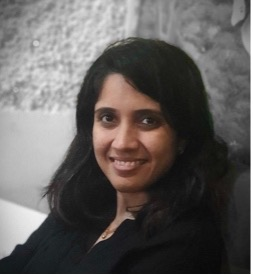

|  |
RADHIKA CHAVAN
SASB FSA | Transformation Leader | Entrepreneur
Creating business value through Sustainability
|
About Me
Innovative Executive with 17 years of corporate and entrepreneurial experience.
Balanced blend of consulting, product development and professional services. Result-oriented leader in Sustainability, Digital transformation, Triple Bottom Line Growth, Resource Optimization, Productivity and Efficiency.
Education and Certifications
- BirlaInstituteofTechnologyandScience (BITS), Pilani, India 2000 – 2004 Bachelor of Engineering (Hons.) Chemical Engineering
- SASB FSA Credential
- PMP & CSM
- MIT’sapproachtoDesignThinkingInnovation of Products and Service
Global engagement footprint
- APAC:Australia,India,Japan,Singapore
- UK,France,Netherlands,UAE
- USA
Skills
| Artifical Intelligence |
*** |
| Salesforce–LWC,ApexClass |
**** |
|
| ConvolutionalNeural Nets |
*** |
| Deep Natural Language Processing |
*** |
|